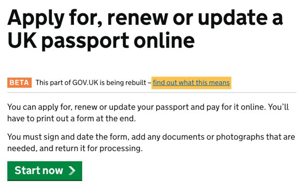
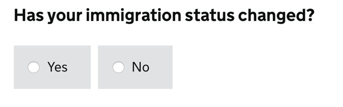
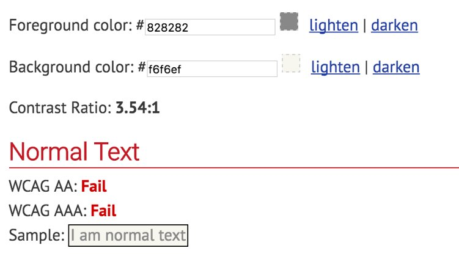
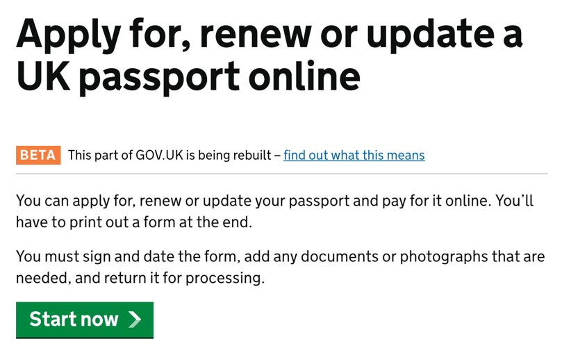

Pair programming

BDD and TDD

Clean Code

Dockerfiles
- Dockerfile, is a file, with a set of instructions, starting with a FROM image, to build an image

Managing Containers

Our solution...? Kubernetes

Example Drone yaml file - .drone.yml

General protection
- Do not trust user input - escape/ sanitise inputted data
- Reduce attack surface - if you do not use them, remove or disable services, protocols, and functionality
- Follow CESG best password guidance
- Review owasp top 10 exploits for common flaws/attack vectors

Open Government

Public Code

Italics 

Line height and alignment


Better example of typography 

Keyboard only - focus style

Tabindex

Tabindex

- No alt text

- alt="Image of UK Flag"
- An empty alt attribute alt=""

Semantic links

Semantic links

Code order

<input type="text">
<label style="margin-top: -4em">
Given names
</label>
Code order
<label for="givenName">
Given names
</label>
<input type="text" name="givenName" id="givenName" class="form-control" aria-required="true">
Semantic markup

<p> Has your immigration status changed?</p>
<input type="radio"><span>Yes</span>
<input type="radio"><span>No</span>
Semantic markup
<fieldset id="immigration-group">
<legend> Has your immigration status changed?</legend>
<label class="block-label" for="immigration-Yes">
<input type="radio" name="immigration" id="immigration-Yes" value="Yes">
Yes
</label>
<label class="block-label" for="immigration-No">
<input type="radio" name="immigration" id="immigration-No" value="No">
No
</label>
</fieldset>
Colour

Colour

Colour
